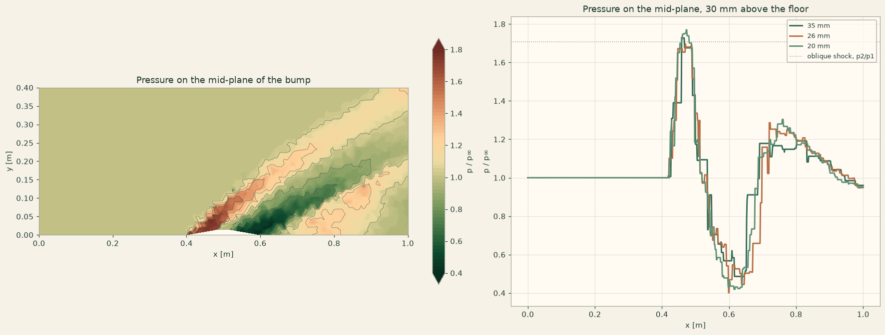
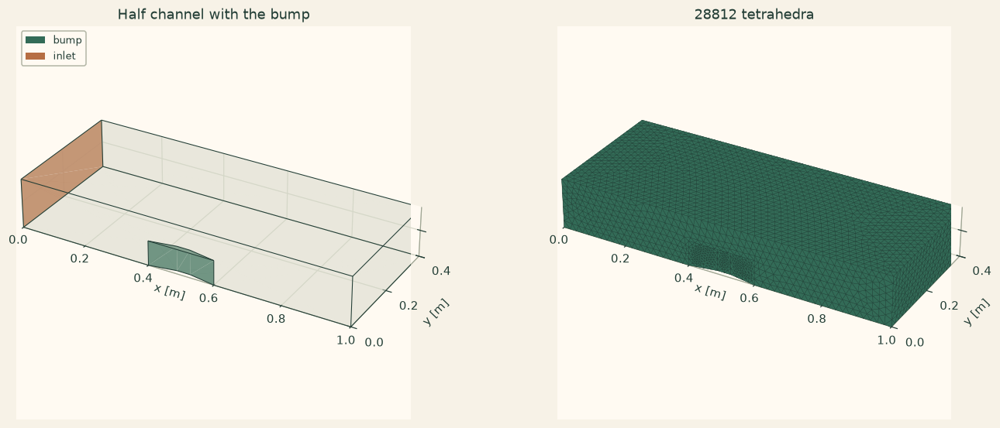

Docs › Examples › Supersonic flow over a bump in a channel
Compressible flow · 3D
Supersonic flow over a bump in a channel
Air at Mach 2 flows through a channel with a bump that covers half of its width; shocks and expansions from the bump fill the channel with a 3D wave pattern.
Run locally with OneSimulation. The example downloads are free. Running them requires an activated runtime. Runtime Alpha 0.2.1a7 · CPython 3.13 on macOS (Apple Silicon), Ubuntu 22.04 (x86-64), and Windows x64. Installation and activation · View pilot plans. Scope of the reference checks.

What it computes
Half of the channel is read from a STEP file and meshed with tetrahedra, finer on the bump. OneSimulation solves the 3D compressible Euler equations with HLLC flux, MUSCL reconstruction and Barth-Jespersen limiter, driven to steady state by local pseudo-time stepping, on three meshes. The script that builds the STEP file comes with the notebook.
What it checks
On the two finer meshes the nose shock angle on the mid-plane is 40.1 and 37.6 degrees against 39.3 degrees from oblique-shock theory (+1.9 %, -4.4 %), the pressure behind it 1.678 and 1.672 against 1.707 (-1.7 %, -2.0 %); the sampled mass flow through outlet and inlet agrees within 0.7 %.
Geometry
The notebook starts at the import of the CAD file supersonic_bump_channel_3d.step: STEP (AP242), readable by any CAD program, with the names of the faces that the boundary conditions use. Put it next to the notebook.

The geometry script
The script supersonic_bump_channel_3d_geometry.py builds the geometry with the CAD objects of OneSimulation and writes the file. Change a dimension there, run it, and run the notebook again.
"""Geometry of the OneSimulation example "Supersonic flow over a bump in a channel (3D)".
Builds half of a channel 1 m long, 0.4 m high and 0.3 m wide with the CAD objects of
OneSimulation: the half 0 < z < 0.15 m next to the mid-plane z = 0. On the floor sits a bump that
covers the middle half of the channel width (0 < z < 0.075 m in the half model): it rises at 10
degrees from x = 0.4 m, stays level from x = 0.48 m to 0.52 m and falls at 10 degrees to the floor
at x = 0.6 m. The gas region is written to supersonic_bump_channel_3d.step; the channel faces keep
the names x_min (inlet), x_max (outlet), y_min (floor), y_max (ceiling), z_min (mid-plane) and
z_max (side wall), the faces of the bump are named bump.*.
"""
import numpy as np
from onesim.cad.d2 import Profile
from onesim.cad.d3 import Box, Prism
rise = 0.08 * np.tan(np.radians(10))
bump = Prism(
profile=Profile.polygon(
[(0.4, -0.01), (0.4, 0.0), (0.48, rise), (0.52, rise), (0.6, 0.0), (0.6, -0.01)]
),
height=0.085,
origin=(0.0, 0.0, -0.01),
)
channel = Box(length=1.0, width=0.4, height=0.15) - bump.named("bump")
channel.save("supersonic_bump_channel_3d.step")The notebook
The complete notebook, cell by cell. Run it to produce the figures and the comparison printout.
A supersonic stream that meets an obstacle on a wall cannot be warned in advance: the flow turns abruptly through an oblique shock attached to the leading edge, expands over the crest and is turned back by a second shock at the trailing edge. In a channel the shocks are reflected by the opposite walls, and a bump that covers only part of the width adds shocks and expansions that spread sideways, so that a three-dimensional pattern of crossing waves fills the channel.
The channel comes from the CAD file supersonic_bump_channel_3d.step, written by supersonic_bump_channel_3d_geometry.py: 1 m long, 0.4 m high and 0.3 m wide, of which the half next to the mid-plane is modelled. The bump covers the middle half of the width; it rises at \(\theta=10°\), stays level and falls at 10°. Air at 1 bar and 288 K enters at \(M=2\).
| face | condition | |---|---| | x_min | supersonic inflow: \(\rho\), \(\mathbf u\), \(p\) of the free stream | | x_max | supersonic outflow | | z_min (mid-plane) | symmetry | | floor, ceiling, side wall, bump | slip wall |
Reference. Near the leading edge, on the mid-plane of the bump, the shock is the oblique shock of a wedge: the theta-beta-Mach relation gives the shock angle \(\beta=39.31°\) and the pressure ratio \(p_2/p_1=1.707\) for \(M=2\) and \(\theta=10°\) (J. D. Anderson, Modern Compressible Flow, 3rd ed., McGraw-Hill 2003, ch. 4). The mass that enters must leave.
import numpy as np
from onesim.cad.d2 import Plane
from onesim.cad.exchange import load
from onesim.meshing import LocalRefinement, TetrahedralMesher
from onesim.numerics import Numerics
from onesim.numerics.fluxes import HLLC
from onesim.numerics.fvm import (
MUSCL,
BarthJespersenLimiter,
FiniteVolume,
LocalTimeStepping,
)
from onesim.numerics.time import ForwardEuler, TimeStepLimits
from onesim.physics.hydrodynamics import (
CompressibleEuler,
IdealGasEquationOfState,
SlipWall,
SupersonicInflow,
SupersonicOutflow,
Symmetry,
)
from onesim.simulation import Problem, Simulation
from onesim.simulation.initial_conditions import InitialValue
from onesim.visualization import plots, theme
from scipy.optimize import brentq
theme.set()Geometry and mesh
Tetrahedra of 35, 26 and 20 mm for the mesh study, three times finer on the bump.
channel = load("supersonic_bump_channel_3d.step")
faces = channel.boundaries
bump = (
faces.all
- faces.x_min
- faces.x_max
- faces.y_min
- faces.y_max
- faces.z_min
- faces.z_max
)
meshes = {
size: TetrahedralMesher(
target_size=size,
refinements=(LocalRefinement(region=bump, target_size=size / 3),),
).generate(channel)
for size in (0.035, 0.026, 0.020)
}
view = plots.Camera(elevation=30, azimuth=-60)
fig = plots.figure(1, 2, size=(15, 6))
plots.geometry(
channel,
selection={"bump": bump, "inlet": faces.x_min},
labels=False,
camera=view,
title="Half channel with the bump",
ax=fig[0],
)
plots.mesh(
meshes[0.020],
groups=("all",),
legend=False,
camera=view,
title=f"{meshes[0.020].cell_count} tetrahedra",
ax=fig[1],
)
plots.show()Model
Air as an ideal gas, HLLC flux with MUSCL reconstruction and the Barth-Jespersen limiter; local pseudo-time stepping (CFL 0.9) drives each mesh to steady state in 800 iterations.
gamma, mach, pressure_in, density_in = 1.4, 2.0, 1.0e5, 1.21
speed = mach * np.sqrt(gamma * pressure_in / density_in)
model = CompressibleEuler(
domain=channel.volume, equation_of_state=IdealGasEquationOfState(gamma=gamma)
)
problem = Problem(
name="Supersonic bump channel",
geometry=channel,
physics=(model,),
boundary_conditions=(
SupersonicInflow(
boundary=faces.x_min,
physics=model,
density=density_in,
velocity=(speed, 0.0, 0.0),
pressure=pressure_in,
),
SupersonicOutflow(boundary=faces.x_max, physics=model),
Symmetry(boundary=faces.z_min, physics=model),
SlipWall(
boundary=faces.all - faces.x_min - faces.x_max - faces.z_min, physics=model
),
),
initial_conditions=(
InitialValue(model.density, density_in),
InitialValue(model.momentum, (density_in * speed, 0.0, 0.0)),
InitialValue(
model.total_energy, pressure_in / (gamma - 1) + 0.5 * density_in * speed**2
),
),
)
numerics = Numerics(
spatial=FiniteVolume(
convection=HLLC(),
reconstruction=MUSCL(),
limiter=BarthJespersenLimiter(),
stability=LocalTimeStepping(cfl=0.9),
),
time_integrator=ForwardEuler(),
step_limits=TimeStepLimits(stability_safety_factor=1.0),
)
results = {
size: Simulation(problem=problem, mesh=mesh, numerics=numerics).run(
start_time=0, end_time=800, time_step=1.0
)
for size, mesh in meshes.items()
}Results
The shock front on the mid-plane is where the pressure crosses the middle between free stream and post-shock value on horizontal lines at heights 12 to 30 mm; its angle is measured from the bump nose. The mass flow is integrated over cross-sections behind the inlet and in front of the outlet.
turn = np.radians(10)
deflection = (
lambda beta: 2
/ np.tan(beta)
* (mach**2 * np.sin(beta) ** 2 - 1)
/ (mach**2 * (gamma + np.cos(2 * beta)) + 2)
)
beta = brentq(lambda b: deflection(b) - np.tan(turn), np.arcsin(1 / mach), 1.1)
ratio = 1 + 2 * gamma / (gamma + 1) * ((mach * np.sin(beta)) ** 2 - 1)
grid_y, grid_z = np.meshgrid(
np.linspace(0.005, 0.395, 40), np.linspace(0.003, 0.147, 15)
)
plane = lambda x: np.column_stack(
(np.full(grid_y.size, x), grid_y.ravel(), grid_z.ravel())
)
mass_flow = lambda result, x: np.trapezoid(
np.trapezoid(
result.field(model.momentum).evaluate(plane(x))[:, 0].reshape(grid_y.shape),
grid_y[0],
axis=1,
),
grid_z[:, 0],
)
summary = {}
for size, result in results.items():
pressure = result.field(model.pressure)
angles = []
for height in (0.012, 0.018, 0.024, 0.030):
xs = np.linspace(0.38, 0.4 + 0.95 * height / np.tan(turn), 801)
values = np.ravel(
pressure.evaluate(
np.column_stack((xs, np.full_like(xs, height), np.full_like(xs, 0.005)))
)
)
level = pressure_in * (1 + ratio) / 2
crossing = int(np.argmax(values > level))
front = np.interp(
level, values[crossing - 1 : crossing + 1], xs[crossing - 1 : crossing + 1]
)
angles.append(np.arctan2(height, front - 0.4))
ramp = np.linspace(0.42, 0.46, 5)
behind = np.ravel(
pressure.evaluate(
np.column_stack(
(ramp, (ramp - 0.4) * np.tan(turn) + 0.008, np.full(5, 0.005))
)
)
)
summary[size] = (
np.degrees(np.mean(angles)),
np.mean(behind) / pressure_in,
mass_flow(result, 0.98) / mass_flow(result, 0.02) - 1,
)
print(f"oblique-shock theory: β = {np.degrees(beta):.2f}°, p2/p1 = {ratio:.3f}")
print(
" mesh [mm] tetrahedra shock angle [°] deviation p2/p1 on the ramp deviation mass outflow / inflow - 1"
)
for size, (angle, pressure_ratio, mass) in summary.items():
print(
f"{1e3 * size:8.0f} {meshes[size].cell_count:11d} {angle:14.2f} {100 * (angle / np.degrees(beta) - 1):+11.1f} % {pressure_ratio:15.3f}"
f" {100 * (pressure_ratio / ratio - 1):+11.1f} % {mass:22.1e}"
)Figure
The pressure on the mid-plane - the nose shock, the expansion over the crest, the trailing shock and their reflections - and along a line 30 mm above the floor on the three meshes.
fine = results[0.020]
fig = plots.figure(1, 2, size=(16, 6))
plots.section(
fine.field(model.pressure),
plane=Plane(origin=(0, 0, 0.005), normal=(0, 0, 1)),
component=lambda p, position: p / pressure_in,
limits=(0.4, 1.8),
contours=12,
subdivisions=1,
aspect=1.0,
label="p / p∞",
title="Pressure on the mid-plane of the bump",
ax=fig[0],
)
line = np.linspace(0.0, 1.0, 801)
plots.line(
line,
{
f"{1e3 * size:.0f} mm": np.ravel(
result.field(model.pressure).evaluate(
np.column_stack(
(line, np.full_like(line, 0.03), np.full_like(line, 0.005))
)
)
)
/ pressure_in
for size, result in results.items()
},
hlines={"oblique shock, p2/p1": ratio},
xlabel="x [m]",
ylabel="p / p∞",
title="Pressure on the mid-plane, 30 mm above the floor",
legend="upper right",
ax=fig[1],
)
plots.show()Going further
Make the bump span the full width in supersonic_bump_channel_3d_geometry.py and write the STEP file again: the side waves disappear and the flow becomes the plane flow over a wedge. Lowering the Mach number towards 1.3 detaches the nose shock at this angle, the case of a blunt obstacle.